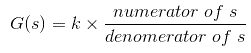
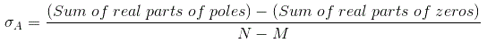
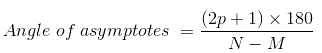
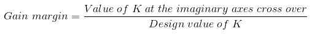
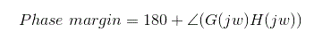
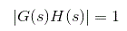
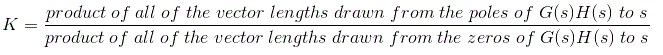

The root locus technique in control system was first introduced in the year 1948 by Evans. Any physical system is represented by a transfer function in the form of

We can find poles and zeros from G(s). The location of poles and zeros are crucial keeping view stability, relative stability, transient response and error analysis. When the system put to service stray inductance and capacitance get into the system, thus changes the location of poles and zeros. In root locus technique in control system we will evaluate the position of the roots, their locus of movement and associated information. These information will be used to comment upon the system performance.
Now before I introduce what is a root locus technique, it is very essential here to discuss a few of the advantages of this technique over other stability criteria. Some of the advantages of root locus technique are written below.
Advantages of Root Locus Technique
- Root locus technique in control system is easy to implement as compared to other methods.
- With the help of root locus we can easily predict the performance of the whole system.
- Root locus provides the better way to indicate the parameters.
Now there are various terms related to root locus technique that we will use frequently in this article.
- Characteristic Equation Related to Root Locus Technique : 1 + G(s)H(s) = 0 is known as characteristic equation. Now on differentiating the characteristic equation and on equating dk/ds equals to zero, we can get break away points.
- Break away Points : Suppose two root loci which start from pole and moves in opposite direction collide with each other such that after collision they start moving in different directions in the symmetrical way. Or the break away points at which multiple roots of the characteristic equation 1 + G(s)H(s)= 0 occur. The value of K is maximum at the points where the branches of root loci break away. Break away points may be real, imaginary or complex.
- Break in Point : Condition of break in to be there on the plot is written below :
Root locus must be present between two adjacent zeros on the real axis
.
- Centre of Gravity : It is also known centroid and is defined as the point on the plot from where all the asymptotes start. Mathematically, it is calculated by the difference of summation of poles and zeros in the transfer function when divided by the difference of total number of poles and total number of zeros. Centre of gravity is always real & it is denoted by σA.

Where N is number of poles & M is number of zeros. - Asymptotes of Root Loci : Asymptote originates from the centre of gravity or centroid and goes to infinity at definite some angle. Asymptotes provide direction to the root locus when they depart break away points.
- Angle of Asymptotes : Asymptotes makes some angle with the real axis and this angle can be calculated from the given formula,

Where p = 0, 1, 2 ....... (N-M-1)
N is the total number of poles
M is the total number of zeros. - Angle of Arrival or Departure : We calculate angle of departure when there exists complex poles in the system. Angle of departure can be calculated as 180-{(sum of angles to a complex pole from the other poles)-(sum of angle to a complex pole from the zeros)}.
- Intersection of Root Locus with the Imaginary Axis : In order to find out the point of intersection root locus with imaginary axis, we have to use Routh Hurwitz criterion. First, we find the auxiliary equation then the corresponding value of K will give the value of the point of intersection.
- Gain Margin : We define gain margin as a by which the design value of the gain factor can be multiplied before the system becomes unstable. Mathematically it is given by the formula
 - Phase Margin : Phase margin can be calculated from the given formula:
 - Symmetry of Root Locus : Root locus is symmetric about the x axis or the real axis.
How to determine the value of K at any point on the root loci ? Now there are two ways of determining the value of K, each way is described below.
- Magnitude Criteria : At any points on the root locus we can apply magnitude criteria as,

Using this formula we can calculate the value of K at any desired point. - Using Root Locus Plot : The value of K at any s on the root locus is given by

Root Locus Plot
This is also known as root locus technique in control system and is used for determining the stability of the given system. Now in order to determine the stability of the system using the root locus technique we find the range of values of K for which the complete performance of the system will be satisfactory and the operation is stable.
Now there are some results that one should remember in order to plot the root locus. These results are written below:
- Region where root locus exists : After plotting all the poles and zeros on the plane, we can easily find out the region of existence of the root locus by using one simple rule which is written below,
Only that segment will be considered in making root locus if the total number of poles and zeros at the right hand side of the segment is odd.
- How to calculate the number of separate root loci ? : A number of separate root loci are equal to the total number of roots if number of roots are greater than the number of poles otherwise number of separate root loci is equal to the total number of poles if number of roots are greater than the number of zeros.
Procedure to Plot Root Locus
Keeping all these points in mind we are able to draw the root locus plot for any kind of system. Now let us discuss the procedure of making a root locus.
- Find out all the roots and poles from the open loop transfer function and then plot them on the complex plane.
- All the root loci starts from the poles where k = 0 and terminates at the zeros where K tends to infinity. The number of branches terminating at infinity equals to the difference between the number of poles & number of zeros of G(s)H(s).
- Find the region of existence of the root loci from the method described above after finding the values of M and N.
- Calculate break away points and break in points if any.
- Plot the asymptotes and centroid point on the complex plane for the root loci by calculating the slope of the asymptotes.
- Now calculate angle of departure and the intersection of root loci with imaginary axis.
- Now determine the value of K by using any one method that I have described above.
- Calculate the gain margin.
- Calculate the phase margin.
- You can easily comment on the stability of the system by using Routh array.
By following above procedure you can easily draw the root locus plot for any open loop transfer function.
 by
by